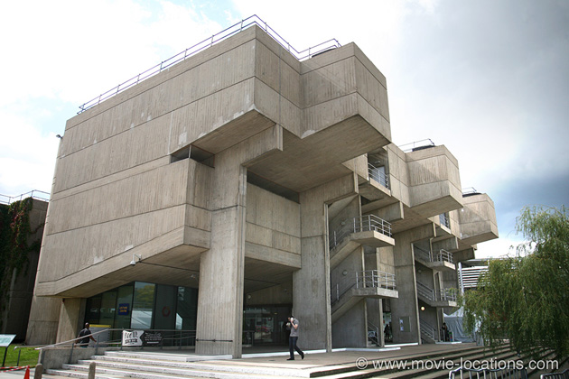
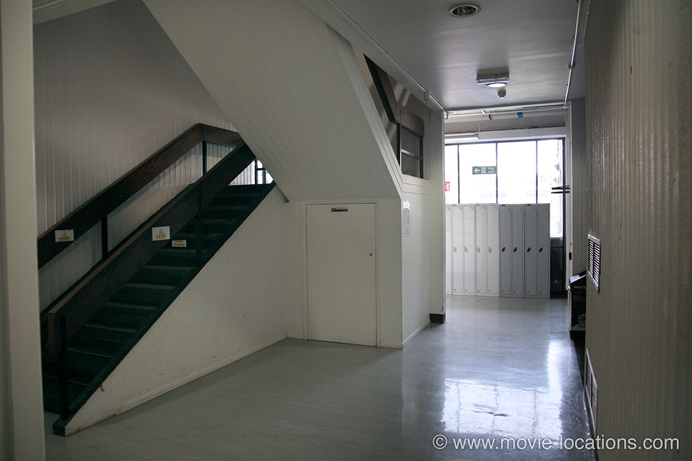
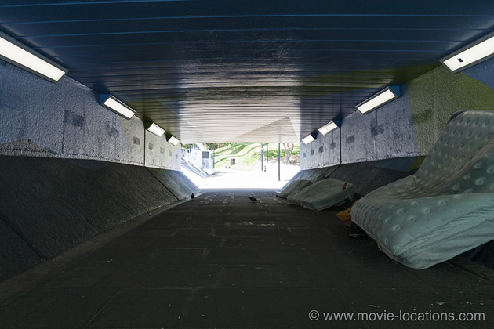
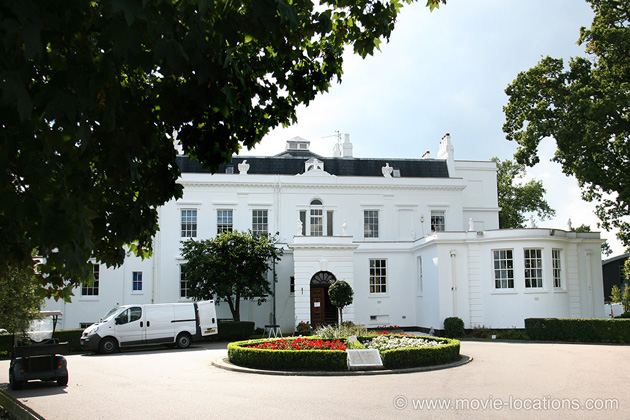
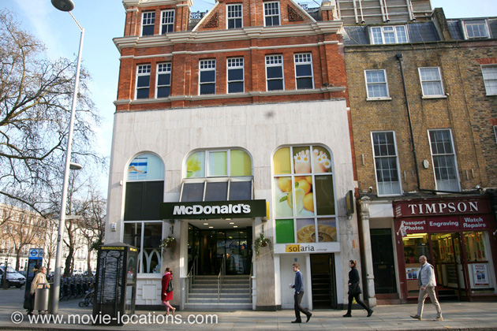
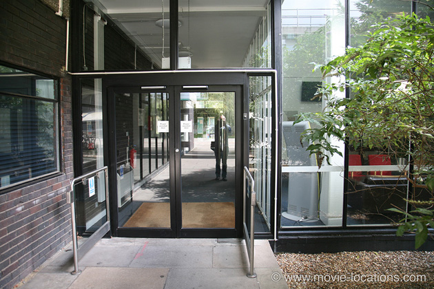
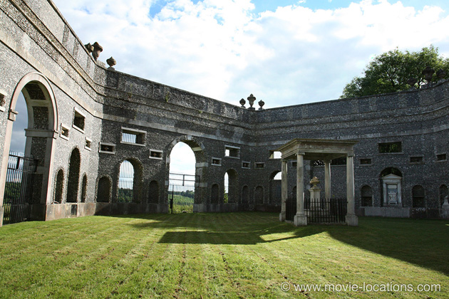
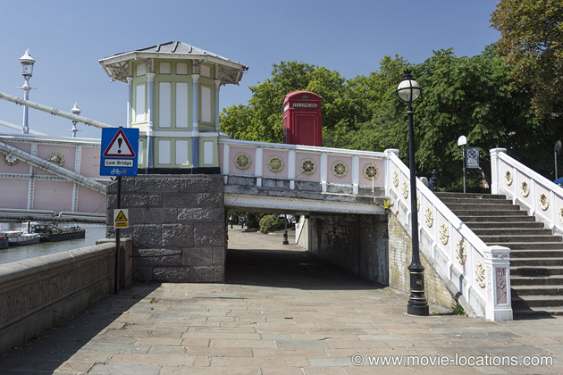

A Clockwork Orange
Main Content

Discover where Stanley Kubrick's A Clockwork Orange (1971) was filmed in the UK, around London, including Thamesmead, Wandsworth Chelsea and Brunel University; as well as Hertfordshire, Buckinghamshire and Oxfordshire.
Set vaguely in the north of England, judging by the accents, A Clockwork Orange was made almost entirely on location around London and the Home Counties (the southeastern counties surrounding the capital), with notoriously travel-phobic director Stanley Kubrick choosing locations from architectural guides.
For many years, Kubrick’s refusal to allow the film to be shown in the UK gave his blackly comic version of Anthony Burgess’ novel about free will and control an undeserved reputation as a fearsome video nasty.
Virtually the only purpose-built set, the ‘Korova Milk Bar’, was constructed in a disused factory which stood on Elstree Way at Bullhead Road in Borehamwood, Hertfordshire – near to the MGM Studios where 2001: A Space Odyssey had been shot. The building has long since been demolished and a petrol station now stands on the site.
The grim housing estate of Alex (Malcolm McDowell) is part of the unspeakable concrete disaster that is Thamesmead South, a vast, dismal, windswept collection of tower blocks connected by intimidating walkways. The exterior of his glum home was the Tavy Bridge Centre on the A2041 at Yarnton Way, which has recently been demolished.
The entrance lobby of Alex's block is the entrance to Tower D on the campus of Brunel University in Uxbridge, Greater London. There's much more of the campus later.

The benighted subway, where the Droogs attack the old tramp, can be found over in West London. It’s a tough call – choosing between the four near-identical subways leading down beneath the traffic island dominated by the huge circular advertising installation on Trinity Road, Wandsworth, deserted, unswept and extremely unnerving. I'm finally convinced that it's the southern underpass, between Trinity Road and Swandon Way.

The ‘Flat Block Marina’ is Thamesmead’s artificially created Southmere Lake. Alex reasserts his dominance over fellow Droogs here by dumping Dim in the water and slicing his outstretched hand at Binsey Walk on the Lake’s western shore overlooked by the tower blocks of Yarnton Way.
More futuristic cityscapes (subsequently cut from the film) filmed in the Sixties concrete shopping centre of Friar’s Square in Aylesbury, Buckinghamshire. Another urban disaster, the centre was closed down in 1990 and drastically remodelled as a much more friendly redbrick indoor mall.
The derelict theatre in which the two gangs clash was on Taggs Island in the Thames near Hampton, upriver from Molesey Lock. The island was named after a boatbuilder called Thomas Tagg who built a luxurious hotel on the island in the 1870s. The hotel was later rebuilt by impresario Fred Karno, the man who discovered Charlie Chaplin (and who was played by John Thaw in Richard Attenborough's 1992 biopic, Chaplin), and modestly renamed The Karsino. Karno also hired the most famous theatre architect, Frank Matcham, to add the Palm Court Concert Pavilion, which is what's seen in the film.
In the depression following WWI, the hotel was never as successful, opening and closing several times until being demolished in 1971 shortly after the spectacular fight scene was filmed.
The island can be reached by several footbridges and now provides mooring for more than 60 extremely upmarket houseboats.
The interior of Alex’s apartment in ‘Municipal Flat Block 18A, Linear North’ is a flat at the top of Canterbury House, a highrise on Stratfield Road, at Canterbury Road, in Borehamwood (just a little northwest from where the milk-bar set was built).
The couple who lived in the flat were temporarily moved out and £5,000 was spent on on redecoration. With filming over and the flat restored to its original state, Kubrick, ever the perfectionist, moved the pair out again to re-shoot a couple of close-ups.
There's now a plaque commemorating filming. Convenient for the studios, the block has also featured in TV shows On The Buses and EastEnders.

‘Woodmere Health Farm’, home of Miss Weathers, the cat lady (Miriam Karlin), was Shenley Lodge now Manor Lodge School, Rectory Lane, Shenley, in the Hertfordshire countryside.
Also in Hertfordshire is the interior used for ‘Home’, Patrick Magee’s futuristic pad and site of the notorious ‘Singin’ in the Rain’ rape of Adrienne Corri (when the two met in Hollywood, Gene Kelly allegedly snubbed Kubrick for the use of this number in the scene), is Skybreak, designed by Sir Norman and Wendy Foster with Richard Rogers. It’s tucked invisibly away on The Warren just north of The Avenue in the tiny village of Radlett, Hertfordshire.
The exterior is New House, 4 Church Street, Shipton under Wychwood about 12 miles northwest of Oxford, in Oxfordshire. The Cotswold stone-walled house, with its Japanese garden and pool, built in 1964 and now Grade-II listed, is hidden by trees and not visible from the road.

Fast sex to fast food: the très Sixties chrome and glass Chelsea Drugstore, which stood on the Kings Road at the northwest corner of Royal Avenue, became record shop, where Alex picks up two girls for a spot of high speed ‘in and out’. The shop closed in the Seventies and is now a branch of McDonalds.
Opened in 1968, The Chelsea Drugstore was a sleek modern glass and aluminum fronted building on the northwest corner of Royal Avenue and the Kings Road, in west London. Modeled on Le Drugstore on Boulevard St Germain in Paris
The bizarre ‘Duke of New York’ pub was the Old Leather Bottle, 76 Stonegrove, Edgware. It became The Bottle and Dragon, before being demolished in October 2002. A block of flats now stands on the site.

The ‘Ludovico Medical Facility’, where Alex undergoes the gross aversion therapy, is the campus of Brunel University in Uxbridge, Greater London. The giant overhanging concrete monstrosity is the Lecture Centre in the middle of campus, opposite which Alex is received into the entrance of the Crank Building. The campus is on Kingston Lane off Hillingdon Hill about a mile south of Uxbridge (tube: Uxbridge).

In prison, Alex finds sexual fantasy material in the Bible. The Roman fantasy sequence in which he becomes a Centurion whipping Christ, is filmed in the Dashwood Mausoleum, at the top of West Wycombe Hill, Buckinghamshire, next to the Church of St Lawrence, capped with its extraordinary golden ball.
The Mausoleum was also used as the satanic temple in Hammer Films' 1976 adaptation of Dennis Wheatley's To The Devil A Daughter, with Richard Widmark and Christopher Lee.
The demonstration of Alex's cure was filmed in Nettlefold Hall, 1 Norwood High Street, West Norwood, London SE27. Formerly West Norwood Library, the building being converted into a four-screen cinema.

The newly defenceless Alex meets an earlier victim on the Chelsea Embankment at Oakley Street, Chelsea, SW3, and it’s here, under Albert Bridge that the tramps take their revenge.
The beating he gets from his old pals is Peartree Wood, at the southern end of School Lane, just south of Bricket Wood – near Radlett.
Visit Info
Visit The Film Locations
UK | London
Flights: Heathrow Airport; Gatwick Airport
Visit: London
Travelling: Transport For London
UK | Hertfordshire
Visit: Hertfordshire
UK | Buckinghamshire
Visit: Buckinghamshire
UK | Oxfordshire
Visit: Oxford & Oxfordshire